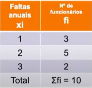
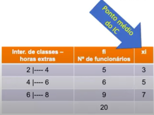

Qual a definição das Medidas de Dispersão?
É o risco - a probabilidade de ocorrência de determinados resultados em relação a um valor médio esperado. É um conceito voltado para o futuro que nos traz a ideia de perda.
- é um parâmetro que indica o grau de variação de um conjuntos de elementos em torno da média;
- o Desvio Padrão serve para medir a dispersão dos seus dados. Ele é ainda uma estatística que mede o quanto seus dados se afastam da média;
- quanto mais os dados estão afastados da média, pior é;
- quanto maior o Coeficiente de Variação, pior é.
Há quatro medidas de dispersão:
- Amplitude Total;
- Desvio Médio Simples;
- Variância; e
- Desvio Padrão (DP);
Aqui serão abordados os dois últimos. O DP é a raiz quadrada da Variância, então para encontrarmos o DP, precisaremos encontrar primeiro a Variância.
Desvio Padrão quando tratamos de uma população:
ϑ = √∑(xi - x)2 * fi / ∑fi
Desvio Padrão quando tratamos de uma amostra:
ϑ = √∑(xi - x)2 * fi / ∑fi - 1
A diferença nos dois casos é que na população o conteúdo dentro da raiz é dividido por ∑fi, já na amostra é dividido por ∑fi - 1.
E a última fórmula que precisaremos é o Coeficiente de Variação, que é o DP em forma de porcentagem:
CV = s / x ; o mesmo que CV = DP / Média * 100
Que é o DP dividido pela Média * 100. Essa fórmula vai nos ajudar a interpretar o DP.
- Observação:
- A Variância e o Desvio Padrão somente são calculados em Variáveis Quantitativas.
- Média = (fi * PMIC) + (fi * PMIC)...+ (fi * PMIC) / fi(total)
Exemplo:
O proprietário de uma determinada empresa quer informações sobre as vendas de suas filiais. Sendo assim, a tabela abaixo apresenta o registro das vendas (em quantidade de peças) de uma semana de trabalho de suas 3 filiais.

- Primeiramente, calculou-se a média aritmética simpes, a partir desse cálculo tem-se a venda média semanal de cada filial e, a princípio a filial C teve a melhor média de vendas, no entanto, há uma grande variação entre as vendas de cada filial, sendo necessário encontrar também o valor do desvio padrão e , posteriormente o Coeficiente de Variação para verificar o propósito desta empresa.
- Através do cálculo do DP e do CV percebe-se que a filial A foi a que apresentou menor variação nas vendas desta semana analisada. Está filial então é que teve melhor desempenho.
A - Variável Quantitativa Discreta (Variância e Desvio Padrão)
- População:
- Calcule a Variância e o Desvio Padrão da distribuição abaixo, representativa de uma POPULAÇÃO, sobre as faltas anuais de 10 funcionários.

Média = (1 * 3 + 2 * 5 + 3 * 2) / 10 = 1,9
Desvio Padrão >> ϑ = √∑(xi - x)2 * fi / ∑fi
ϑ = √((1 - 1,9)2 * 3 + (2 - 1,9)2 * 5 + (3 - 1,9)2 * 2) / 10 = √(2,43 + 0,05 + 2,42) / 10 = √0,49 = 0,7 (DP)
CV = DP / Média * 100, ou seja, (0,7 / 1,9) * 100 = 37%
- Amostra:
- Calcule a Variância e o Desvio Padrão da distribuição abaixo, representativa de uma AMOSTRA, sobre as faltas anuais de 10 funcionários.
Média = (1 * 3 + 2 * 5 + 3 * 2) / 10 = 1,9
Desvio Padrão >> ϑ = √∑(xi - x)2 * fi / ∑fi - 1
ϑ = √((1 - 1,9)2 * 3 + (2 - 1,9)2 * 5 + (3 - 1,9)2 * 2) / 10 - 1 = √(2,43 + 0,05 + 2,42) / 9 = √0,54 (Variância) = 0,74 (DP)
CV = DP / Média * 100, ou seja, (0,74 / 1,9) * 100 = 38%
B - Variável Quantitativa Contínua (Variância e Desvio Padrão)
- População:
- Calcule a Variância e o Desvio Padrão da distribuição abaixo, representativa de uma POPULAÇÃO, sobre as horas-extras, trabalhadas semanalmente, de 20 funcionários de uma determinada empresa.

As fórmulas nas Variáveis Quatitativas Discreta e Contínua são as mesmas, entretanto na Contínua eu preciso primeiro encontrar o Ponto Médio do Intervalo de Classe(IC).
Ponto Médio do IC = (Vmin + Vmax) / 2, como por exemplo na primeira classe da tabela acima, (2 + 4) / 2 = 3
Média = (3 * 5 + 5 * 6 + 7* 9) / 20 = 108 / 20 = 5,4
ϑ = √((3 - 5,4)2 * 5 + (5 - 5,4)2 * 6 + (7 -
5,4)2 * 9) / 20 = √(28,8 + 0,96 + 23,04) / 20 =
√2,64 (Variância) = 1,62 (DP)
* como já dito, o DP é o resultado da raiz quadrada da Variância.
CV = DP / Média * 100, ou seja, (1,62 / 5,4) * 100 = 30%
Interpretando:
- os valores se dispersam da média 5,4 por 1,62 unidades, ou seja, os funcionários que trabalharam de 3,78 a 7,02 horas-extras (3,78 < 5,4 < 7,02 | 1,62 se distanciando da Média para mais ou para menos) em uma determinada semana, encontraram-se dentro da zona de normalidade.
O que não é um bom resultado (30%), lembrando que quanto mais os dados se afastam da média pior é o resultado, e quanto mais se aproximam da média, melhor o resultado.
Para entender melhor a matéria, assista à vídeoaula da Professora Maria Luísa Cervi Uzun, em seu canal no YouTube, disponível abaixo.
Para melhor fixar a matéria, resolva os exercícios da lista preparada para esta aula, clique aqui para baixar o arquivo.
****terminar****